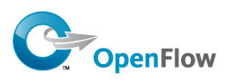

Más vale tarde que nunca: si hace ya un tiempo nos arrancamos con una introducción teórica a las diferentes filosofías de virtualización de red, hoy retomamos el tema para ahondar en conceptos más específicos.
Hablemos de OpenFlow, probablemente la tecnología SDN más popular hoy en día.
Leer más…

Como muchos ya sabréis, solemos ir cada año a la FOSDEM, que tiene lugar el primer fin de semana de Febrero en Bruselas. No vamos a ponernos a explicar qué es la FOSDEM, hemos hablado mucho describiéndola, tanto en nuestros podcasts, como en nuestros posts, como en muchos otros lugares... Tampoco vamos a explicaros que hizo mucho frío, que hubo mucha gente, o que bebimos mucha cerv..., digooooo, que hizo mucho frío, que hubo mucha gente, ...
Podríamos contaros que apareció por ahí Richard Stallman repartiendo octavillas destacando que la FOSDEM había dejado de definirse como un evento de software libre, o que hubo bastante barullo sobre el establecimiento de un código de conducta para la siguiente edición... No obstante, como sabemos lo que os importa, os detallamos, en este artículo, algunas de las charlas que más nos gustaron.
Leer más…
Comentarios
¿Qué puede haber mejor para empezar el año nuevo que apuntarse a un curso? Bueno, posiblemente, bastantes otras cosas, pero por si estáis planteándoos un cambio o sentís la necesidad de aprender, en este post os damos la referencia de dos cursos.
Por un lado, en la UPC, se vuelve a impartir éste año el curso de Agile IT Management, Scrum, DevOps y Lean IT, como el impartido el curso pasado, y que comenzará el próximo 17 de Marzo.
Por otro lado, itnove ha organizado algunos cursos para conseguir la certificación de Scrum.org. Por un lado está la preparación para la certificación para Product Owner y para desarrollador en Java.
Comentarios

En este podcast tratamos sobre eventos. Explicamos los Conding Dojos que organiza pyBCN de manera regular en Barcelona, la EuroPython 2015 que será en Bilbao el próximo Julio y el Fosdem 2015 que se celebrará el día 30/01 y 01/02 en Bruselas.
Sobre este último aprovechamos para daros unos consejos que, si estáis pensado en acudir, os pueden ser útiles.
Leer más…
Comentarios
{kind=link}